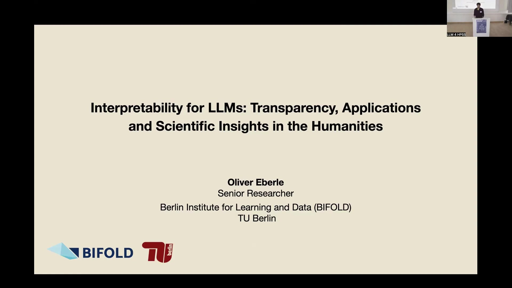
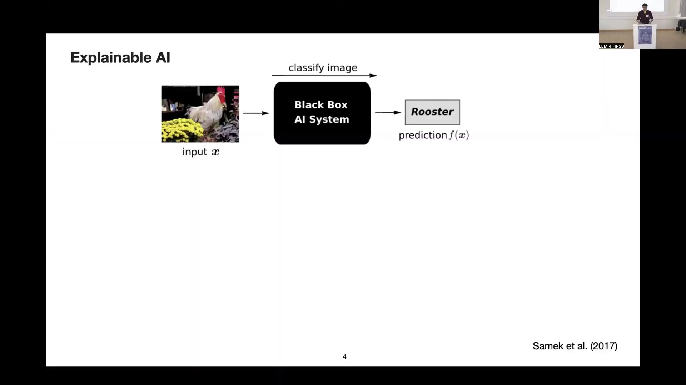
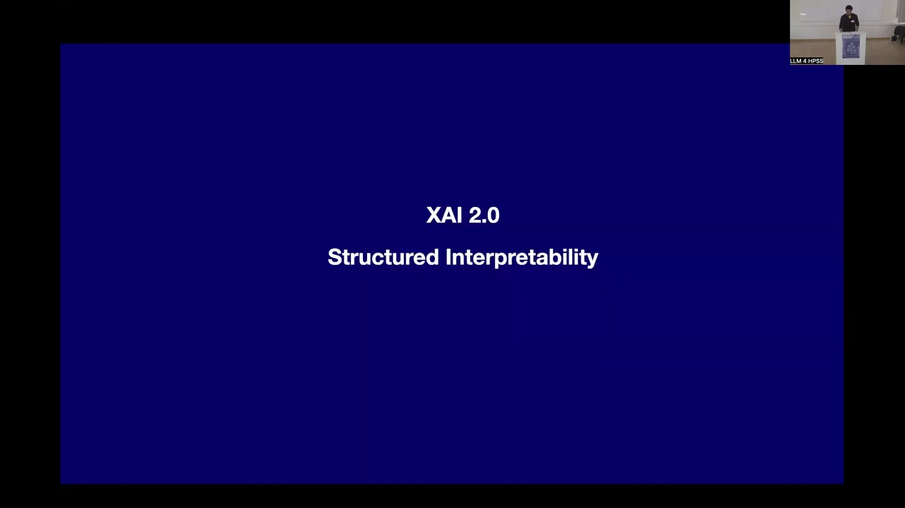
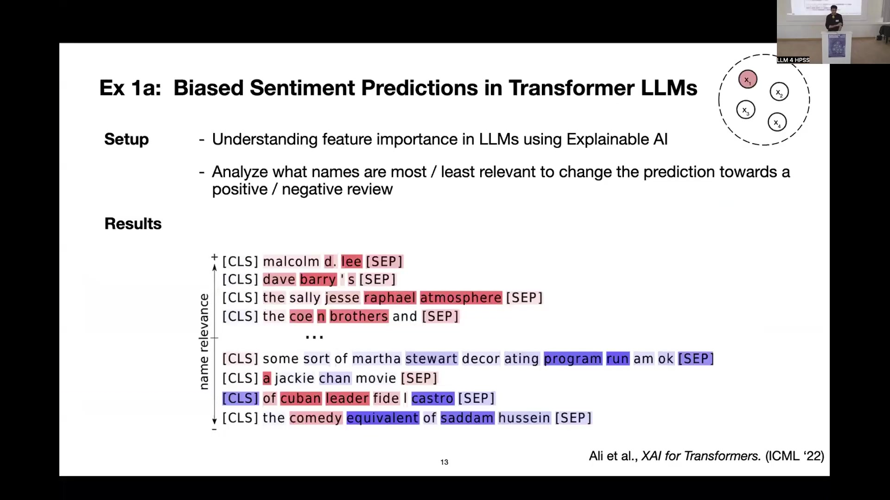
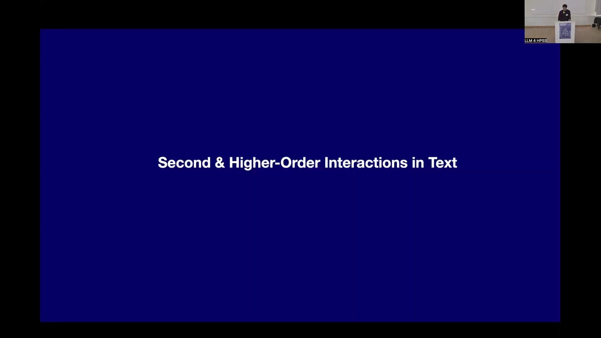
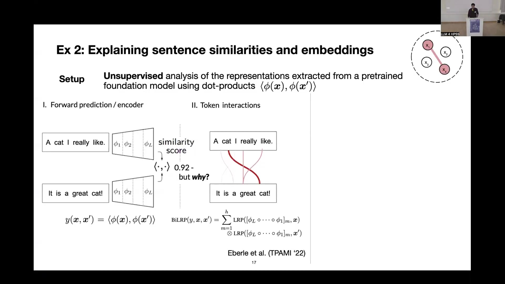
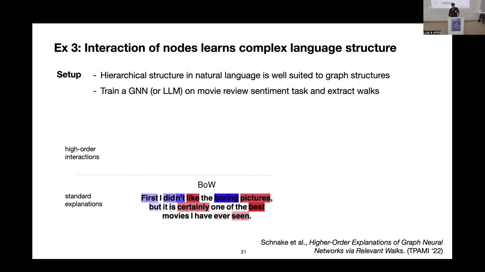

7 Explainable AI and Scientific Insights in Humanities
7.1 Overview
The presentation details the application of Explainable AI (XAI) methods to understand Large Language Models (LLMs) and their application in generating scientific insights within the humanities, specifically focusing on historical texts and images. The work addresses the challenges of interpreting complex “black box” AI systems, particularly the shift from classification models to multi-task generative foundation models.
Part A focuses on XAI techniques. It introduces XAI 1.0, primarily based on feature attributions like heatmaps for classification models (e.g., image and table classification). It highlights the limitations of these methods for generative AI and proposes XAI 2.0, focusing on structured interpretability, feature interactions, and mechanistic views. This includes exploring second-order (pairwise relationships) and higher-order (graph structures, walks) attributions.
Examples include analyzing biases in sentiment prediction based on names using first-order attributions and investigating long-range dependencies in text summarization, finding a bias towards later parts of the input context. Second and higher-order methods are applied to understand similarity predictions in text embeddings, revealing reliance on simple strategies like noun matching, and to analyze complex language structures using Graph Neural Networks (GNNs) and walk-based explanations, demonstrating the ability to capture hierarchical relationships like negation.
Part B applies AI methods to humanities research. An initial application involved extracting visual definitions from a corpus of mathematical instruments using class-specific heatmap explanations to identify relevant visual features (e.g., fine-grained scales). A major project focuses on corpus-level analysis of early modern astronomical tables from the Sacrobosco Corpus (1472-1650), comprising 76,000 pages of university textbooks.
This project addresses challenges posed by heterogeneous data, limited annotations, and the failure of standard OCR and foundation models on this out-of-domain historical data. A workflow named XAI-Historian is developed to aid historians in gaining insights at scale and generating data-driven hypotheses. The method involves data collection, atomization-recomposition (representing tables using bag of bigrams and histograms), and corpus-level analysis through embedding and clustering.
A small, custom-trained model is used to detect bigrams, verified using XAI to ensure it correctly identifies matching features. The resulting table representations are used for distance-based clustering. Cluster entropy analysis is applied to investigate innovation spread across European publication locations, revealing differences in print program diversity. Specific case studies in Frankfurt/Main (center for reprinting) and Wittenberg (political control limiting diversity) are identified and validated against historical knowledge.
Key challenges identified include the difficulty of automated analysis of heterogeneous historical corpora with few labels, the limitations of current foundation models for complex research questions despite their utility for intermediate tasks (labeling, curation, error correction), the roadblock of low-resource data for scaling ML methods, and the need for thorough evaluation of out-of-domain transfer, especially for historical and small-scale data, as LLMs are primarily trained on modern natural language and code. The work emphasizes the necessity of close cooperation between ML experts and domain experts (historians) for validation and meaningful interpretation of AI results in humanities research.
7.2 Presentation Structure

The presentation is structured into two primary sections. The first part, designated A, focuses on Explainable AI (XAI) and methods for understanding Large Language Models (LLMs). This involves developing techniques and approaches to gain insight into the internal workings of these highly complex models.
The second part, designated B, explores the application of AI to generate scientific insights, specifically highlighting applications within the humanities.
7.3 XAI 1.0: Feature Attributions
Explainable AI (XAI) 1.0 represents the initial phase of research in this field, primarily centered on feature attributions. This area of machine learning historically focused on visual data, such as images, with significant advancements in language processing emerging more recently. The core problem addressed was understanding the decision-making process within “black box” machine learning models, particularly classification systems.
In a standard scenario, an input image is fed into a black box AI system, which produces a prediction, such as identifying a “Rooster”. However, the user typically has no understanding of which input features led to this specific prediction.
Post-Hoc Explainability was developed as a solution approach, applying explanation methods after the model has generated its prediction. A common output of these methods is a heatmap representation. The heatmap indicates which specific input features, such as pixels in an image, were most responsible for the model’s prediction. For instance, a heatmap might highlight the head and neck of a rooster image, demonstrating that these pixels were key to the model’s classification decision.
The broader purposes of explainability include:
Verifying that model predictions are reasonable.
Identifying flaws and biases to understand how models make mistakes.
Learning about the underlying problem domain by observing surprising solutions discovered by models.
Ensuring compliance with regulations such as the European AI Act.
This approach characterized the standard XAI scenario until approximately five years ago, as documented by Samek et al. (2017).
7.4 Shift to Generative AI and Foundation Models

The current landscape is dominated by Generative AI (Gen AI), marking a significant shift from models primarily focused on classification. Today’s models possess multi-task capabilities, extending beyond simple classification to include functions such as finding similar images, generating new images, and answering diverse questions across numerous topics. This expanded functionality presents a challenge: it becomes significantly more difficult to trace and ground a specific prediction or generated answer back to particular input features, unlike the more straightforward case of classification.
To address this, there is a need to develop explanation methods that go beyond simple heatmap representations. Proposed directions include considering feature interactions and adopting more mechanistic perspectives to understand model behavior.
Contemporary foundation models are characterized by their multi-task nature and their capacity to function as “world models,” encoding broad knowledge. This characteristic makes them relevant for fields like the humanities, as they can potentially offer insights into societal aspects, the evolution of text over time, and specific features within textual data. The diagram presented, adapted from Samek et al. (2017), illustrates this shift by showing multiple potential outputs from a black box AI system.
7.5 Model Mistakes and Limitations

AI models, including contemporary LLMs, are capable of making surprising mistakes. Two well-known examples illustrate this. The first involves a standard object classifier tasked with identifying a sailboat. The model incorrectly bases its prediction on the surrounding water rather than the boat itself. This error occurs because water is a feature correlated with boats and its texture is easier for the model to detect. This example is documented by Lapuschkin et al. (Nature Communications, 2019).
The second example demonstrates a multi-step planning mistake observed in standard LLMs, such as a Llama 3.something model. When asked to predict the next step in the Tower of Hanoi puzzle, the model attempts an invalid move: directly moving the largest disk, which is inaccessible due to smaller disks on top, to the final right peg. This indicates that the model failed to understand the physical constraints governing the puzzle. This type of error in reasoning is highlighted by Mondal & Webb (arXiv, 2024).
While more recent reasoning models might perform better, these examples underscore the importance of understanding model limitations.
7.6 XAI 2.0: Structured Interpretability

XAI 2.0 introduces the concept of Structured Interpretability, aiming to advance beyond the limitations of heatmap-based explanations. This approach focuses on identifying relevant features and understanding their interactions to provide deeper insights into model behavior.
First-order explanations concentrate on the importance of individual features, such as highlighting a single feature (x1) within a set (x1-x4). These are particularly useful for explaining classifier predictions. An example involves a classifier trained on historical table data. Using heatmaps, it was verified that the model correctly focused on the numerical content of the tables, which serves as a good proxy for detecting numerical tables.
Second-order explanations delve into pairwise relationships between features, examining interactions between pairs like x1 and x2 or x1 and x3. This is crucial for explaining similarity predictions, such as those derived from the dot product of embeddings. The method involves computing interaction scores between tokens. In an application explaining the similarity between two historical tables, interaction scores highlighted matching digits, like ‘38’ in both tables, confirming that the model was functioning as intended by identifying identical numerical content.
Higher-order explanations explore more complex structures, including graph structures, feature subgraphs, or feature walks, which represent sets of features that are relevant together. This is depicted as connections between multiple features, potentially forming complex patterns like triangles. These methods are employed to gain more intricate insights into models and move towards a circuit-level understanding of their operations. An example shows a complex network diagram with highlighted elements representing these relevant feature sets.
7.7 First-Order Attributions in LLMs

First-order attributions have been applied to language data, including examples relevant to the humanities. Example 1a investigates biased sentiment predictions in Transformer LLMs. The setup involves using Explainable AI to understand feature importance in these models, specifically analyzing how names influence the prediction of a positive or negative review. The task uses a standard sentiment prediction scenario on movie reviews.
A method proposed for transformers is used to compute heatmaps and rank sentences based on name relevance. The results indicate that positive sentiment predictions are more likely when associated with male Western names such as Lee, Barry, Raphael, or the Coen Brothers. Conversely, negative sentiment scores are more likely with names perceived as foreign-sounding, like Saddam, Castro, or Chan. This demonstrates the utility of XAI in detecting fine-grained biases within models, a phenomenon now widely recognized in the community. This work is referenced as Ali et al., XAI for Transformers (ICML, 2022).
Example 1b explores first-order attributions for long-range dependencies in LLMs. The setup involves generating text summaries for long inputs, specifically up to an 8k context window using Wikipedia articles, and analyzing the extent of token dependencies. The task is to provide a long text input and ask the model to generate a summary. The method involves analyzing the origin of the information used in the generated summary within the input context to determine if the model utilizes long-range information.
The results show that the model predominantly focuses on the later parts of the context, prioritizing information presented closer to the prompt. While the model is capable of incorporating long-range information from the beginning of the context, it is significantly less likely to do so, as illustrated by a log scale graph showing counts versus position difference. The implication is that LLM-generated summaries may not provide a balanced representation of the entire input text, tending to emphasize recently presented data. This research is referenced as Jafari et al., SambaLRP (NeurIPS, 2024).
7.8 Second & Higher-Order Interactions in Text

The research extends to investigating second and higher-order interactions within text data, particularly in the context of text embeddings and similarity. A standard scenario involves taking two sentences, such as “A cat I really like” and “it is a great cat,” obtaining their embeddings from a model like BERT or a sentence BERT model, and computing a similarity score, typically using a dot product. The challenge lies in understanding the reasons behind a specific similarity score value.
Second-order explanations provide a solution by yielding interaction scores between tokens. These scores help to understand why the model considers the sentences to have high similarity. In a toy example, it was found that noun matching strategies, involving synonyms or identical nouns, are frequently matched and significantly contribute to high similarity predictions.
Analysis at the corpus level, using review data, revealed that models employ quite simplistic strategies to produce high similarity scores. Common patterns include matches between noun tokens (even identical ones), some noun-verb matches, and interactions involving separator tokens. The conclusion drawn is that models, when forced to compress large amounts of information, tend to rely on relatively simplistic strategies, which might not be immediately obvious or intuitive. This implies that when using LLMs for embedding data and subsequently computing rankings based on similarity, the underlying features driving high scores could be very simple.
7.9 Graph Neural Networks and Walk-Based Explanations

Graph Neural Networks (GNNs) are utilized for structured predictions, leveraging their ability to encode structural information. A connection is drawn between GNNs and LLMs: the attention mechanism in LLMs can be conceptualized similarly to GNNs, indicating which tokens are permitted to exchange information through message passing.
A method called walk-based relevance is employed to explain predictions made by GNNs and, by extension, LLMs when framed in this manner. This method provides attributions in terms of “walks,” which represent interactions between features along paths within the graph structure. The process involves feeding an input graph into the model, which processes information through multiple layers (H0 through HL) involving interactions between nodes. The final prediction is then explained by identifying specific walks within the graph structure that are particularly relevant to that prediction. This approach is detailed in Schnake et al., Higher-Order Explanations of Graph Neural Networks via Relevant Walks (TPAMI, 2022).
7.10 Higher-Order Interactions for Complex Language Structure
Walk-based explanations are applied to analyze complex language structure, leveraging the fact that the hierarchical nature of natural language is well-suited to representation as graph structures. The setup involves training a GNN (or an LLM framed as a GNN) on a movie review sentiment task and then extracting relevant walks to explain predictions.
A comparison is made between high-order interactions and standard explanation methods, such as Bag of Words (BoW). Using the example sentence “First I didn’t like the boring pictures, but it is certainly one of the best movies I have ever seen,” a standard explanation method like BoW fails to capture the complexity. It might assign a high score based on the presence of words like “like” or “in it,” completely missing the crucial negation “didn’t like.”
In contrast, high-order interactions, represented through a tree-like graph structure where nodes are words and edges represent relationships, successfully capture this complexity. The method correctly identifies the first part of the sentence, “First I didn’t like the boring pictures,” as having a negative sentiment score despite containing potentially positive words, because it understands the negation. It also correctly assigns a positive score to the second part, reflecting the overall sentiment and the hierarchical structure of the sentence. This demonstrates the ability of higher-order methods to understand more intricate linguistic phenomena. This work is also referenced in Schnake et al., Higher-Order Explanations of Graph Neural Networks via Relevant Walks (TPAMI, 2022).
7.11 AI Insights in Humanities: Visual Definitions

Part B of the presentation shifts focus to AI-based scientific insights within the humanities. Example 4 demonstrates extracting visual definitions from corpora. The data corpus used consists of images of mathematical instruments from the Sphaera Corpus, as compiled by Valleriani and colleagues in 2019.
An initial approach utilized heatmap-based methods. The task involved building a classifier capable of categorizing these images into specific classes, such as distinguishing between a “machine” and a “mathematical instrument.” Class-specific heatmap explanations were employed as the method. The purpose was to assist historians in establishing potentially more objective criteria for defining visual categories within the corpus.
Validation was crucial and involved close cooperation with domain experts, specifically historians like Matteo Valleriani and Jochen Büttner, to verify the meaningfulness of the definitions derived from the AI analysis. The findings indicated that fine-grained scales present on the mathematical instruments were highly relevant features for the models when making classification decisions. This work is documented in El-Haij & Eberle+, Explainability and transparency in the realm of DH (International Journal of Digital Humanities, 2023).
7.12 Corpus-Level Analysis of Early Modern Astronomical Tables

Example 5 presents a major project involving corpus-level analysis of early modern astronomical tables. The data corpus is the Sphaera Corpus, covering the period from 1472 to 1650. This corpus consists of early modern texts, specifically university textbooks, and comprises approximately 76,000 pages.
The problem addressed was the historians’ interest in automatically matching and identifying tables with similar semantics. Manual analysis of this corpus at scale was not feasible. The project faced significant challenges due to the nature of the data: the corpus is highly heterogeneous, and very limited annotations are available. Furthermore, standard Optical Character Recognition (OCR) and contemporary Foundation Models proved ineffective on this historical, out-of-domain data. The corpus is referenced as Sphaera Corpus (1472-1650) (Valleriani+ ’19) and Sacrobosco Table Corpus (1472-1650) (Eberle+ ’24).
7.13 XAI-Historian Workflow for Historical Insights at Scale

To address the challenges of analyzing the historical table corpus at scale, a workflow was developed in collaboration with historians. This workflow is conceptualized as the XAI-Historian approach, enabling historians to utilize AI and explainable AI for data-driven hypothesis generation and the discovery of case studies.
The workflow comprises three main steps:
Data Collections: Starting with the Sacrobosco corpus of historical books.
Atomization-Recomposition: Processes the input tables. Instead of attempting to process the entire table directly with standard foundation models, which are ineffective on this out-of-domain data, the tables are represented using a “bag of bigrams” approach. This involves identifying sequences of two characters, such as ‘01’ or ‘21’. A custom, small model is trained specifically for the task of detecting these bigrams. Explainable AI methods, such as heatmaps or interaction maps, are then used to verify that this custom model functions correctly, for instance, by checking if it consistently detects matching bigrams like ‘38’ on different input tables. This verification process is crucial for building trust in the model’s decisions. The outputs of this step include bigram maps and histograms.
Corpus-Level Analysis: Takes the historical table embeddings, which are derived from the bigram representations, and applies distance-based clustering. The output is a representation of data similarity, often visualized as a scatter plot showing distinct clusters of tables.
This comprehensive workflow is detailed in Eberle et al., Historical insights at scale (Science Advances, 2024).
7.14 Cluster Entropy Analysis for Investigating Innovation Spread

Building upon the XAI-Historian workflow, cluster entropy analysis was applied to investigate the spread of innovation across Europe during the period of Sphaera publication (1472-1650). The method utilizes the output of the clustering approach, which groups historical tables based on their representations derived from the custom bigram model.
The process involves using the table representations obtained from the model, performing distance-based clustering on these representations, and then, for each publication city, determining the diversity of table types produced by counting how many different clusters are represented in that city’s output. Entropy is calculated for each city’s print program as a measure of this diversity. Low entropy indicates that a city primarily reproduces the same content, signifying a less diverse print program. Conversely, higher entropy suggests a more diverse range of publications. The specific metric used is the difference between the observed cluster entropy H(p) and the maximum attainable entropy H(p_max) at that print location, where lower values indicate lower diversity relative to what is theoretically possible.
This analysis identified two interesting cases with the lowest entropy scores. Frankfurt am Main was found to have low diversity, which aligns with its historical reputation as a center known for reprinting editions repeatedly. A more historically significant finding concerned Wittenberg, which also exhibited an unusually low diversity score. This finding supports the historical understanding that political control exerted by the Protestant reformers, particularly Melanchthon, actively limited the print program by dictating the curriculum. The analysis revealed this historically anomalous low diversity, matching existing historical intuition and supported knowledge. This application of the method is detailed in Eberle et al. (Science Advances, 2024).
7.15 Conclusion and Challenges

In conclusion, researchers in the Humanities and Digital Humanities have primarily focused on the digitization of source material. However, automated analysis of these digitized corpora presents significant challenges due to their inherent heterogeneity and the scarcity of available labels. Multimodality is identified as a relevant aspect for future research in this domain.
The integration of Machine Learning (ML) with Explainable AI (XAI) holds potential to scale humanities research efforts and facilitate the development of novel research directions. While Foundation Models and Large Language Models (LLMs), along with prompting techniques, can provide automated results for intermediate tasks such as labeling, data curation, and error correction, they remain limited when addressing more complex research questions.
Significant challenges persist, including the roadblock posed by low-resource data for applying ML methods effectively, particularly in the context of scaling laws. Furthermore, out-of-domain transfer requires thorough evaluation, especially when dealing with historical and small-scale datasets. This challenge arises because current LLMs are primarily trained and aligned for tasks involving modern natural language and code generation, making their direct application to historical or highly specialized data problematic without careful adaptation and validation.